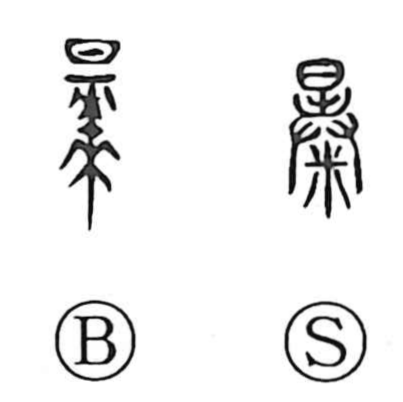

暴

Kun: abaku, abareru | On: bou, baku
violence ・ to expose ・ sudden ・ rough
Explanation
暴 combines 日, the sun, with the body of a dead animal. The carcass is left exposed in the open. Sun, wind, and rain dry and break it apart until the bones are laid bare. This gives ‘expose,’ ‘lay open,’ and ‘reveal.’
The force of the weather can bring rapid disintegration. 暴 therefore also expresses suddenness and violent intensity: fierce rain or sunlight, an abrupt event, or something harshly unleashed. Its sound is associated with the sharp cracking of material split by heat.
Transferred to conduct, that uncontrolled force becomes roughness, violence, and cruelty. The exposing carcass and the severe elements around it supply the physical setting for these later senses.